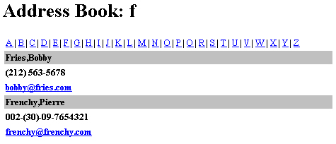

ГЛАВА 12
Шаблоны
Шаблоны можно рассматривать как «расширение» программного кода. Шаблоны не только автоматизируют утомительный процесс кодирования, но и обеспечивают структурное деление проекта в рабочих группах. Роль такого деления возрастает с увеличением объемов проекта и численности групп, а также с усложнением архитектуры проекта, причем не только на стадии программирования, но и при последующем сопровождении программы.
Сказанное стоит пояснить на конкретном примере. Допустим, у нас имеется команда разработчиков, состоящая из web-дизайнеров и программистов. В идеале группа web-дизайнеров трудится над созданием привлекательного и удобного сайта, а группа программистов в это время работает над эффективностью и широтой возможностей web-приложения. К счастью, шаблоны заметно упрощают подобное структурирование процесса. Настоящая глава посвящена созданию системы шаблонов, обеспечивающих подобное «разделение труда».
До настоящего момента я упоминал о двух разных подходах к созданию шаблонов РНР:
Хотя первая схема более понятна и проще реализуется, она также в большей степени ограничивает вашу свободу действий. Главная проблема заключается в том, что код РНР смешивается с компонентами HTML, образующими макет страницы. Возникающие при этом проблемы связаны не только с необходимостью потенциальной поддержки одновременного доступа к странице и ее модификации, но и с повышенной вероятностью ошибок при непосредственном просмотре и редактировании страниц.
Вторая схема во многих ситуациях оказывается гораздо удобнее первой. Тем не менее, хотя структура «заголовок — основная часть — колонтитул» (см. главу 9)
хорошо подходит для структурирования относительно малых сайтов с четко определенным форматом, с увеличением объемов и сложности проекта эти ограничения проявляются все заметнее. Попытки решения этих проблем привели к разработке новой схемы применения шаблонов, более сложной по сравнению с двумя первыми, но и обладающей существенно большей гибкостью. В этой схеме разделяются два главных компонента web-приложения: дизайн и программирование. Подобное деление обеспечивает возможность параллельной разработки (web-дизайн и программирование) без необходимости постоянной координации на протяжении всего рабочего цикла. Более того, оно позволяет в будущем модифицировать один компонент, не влияя на работу другого. В следующем разделе я покажу, как устроена одна из таких схем «нетривиальных шаблонов». Следует помнить, что эта схема существует не только в РНР. Более того, она появилась задолго до РНР и в настоящее время используется в нескольких языках, включая РНР, Perl и Java Server Pages. To, что описано в этой главе, — не более чем адаптация этой схемы применительно к РНР.
Нетривиальная система шаблонов
Как говорилось ранее, главной целью при разработке подобных систем шаблонов является фактическое отделение дизайна от функциональных возможностей. Собственно, эта система и создается для того, чтобы программисты и дизайнеры могли независимо трудиться над своими аспектами приложения, не мешая работе другой группы.
К счастью, сделать это проще, чем кажется на первый взгляд, — при условии, что до начала разработки было проведено некоторое предварительное планирование. В листинге 12.1 представлен некий базовый шаблон, созданный на основе материала этой главы.
Листинг 12.1. Пример шаблона
<html>
<head>
<title>:::::{page_title}:::::</title>
</head>
<body bgcolor="{bg_color}">
Welcome to your default home page. {user_name}!<br>
You have 5 MB and 3 email addresses at your disposal.<br>
Have fun!
</body>
</html>
Обратите внимание на три строки (page_title, bg_color и userjiame), заключенные в фигурные скобки ({ }). Фигурные скобки имеют особый смысл при обработке шаблонов — заключенная в них строка интерпретируется как имя переменной, вместо которого подставляется ее значение. Дизайнер строит страницу по своему усмотрению; все, что от него потребуется, — включать в соответствующие места документа эти ключевые строки. Конечно, программисты и дизайнеры должны заранее согласовать имена всех переменных!
Итак, как же работает эта схема? Прежде всего, возможно, нам придется одновременно работать с несколькими шаблонами, обладающими одними и теми же общими атрибутами. В таких ситуациях применение технологии объектно-ориентированного программирования (ООП) оказывается особенно эффективным. По этой причине все функции построения и выполнения операций с шаблонами будут оформлены в виде методов класса. Определение класса начинается так:
class template {
VAR $files = array( );
VAR $variables = array( );
VAR $openi ng_escape = '{';
VAR $closing_escape = '}';
В массиве $files хранятся идентификаторы файлов и содержимое каждого файла. Атрибут $variables представляет собой двухмерный массив для хранения файлового идентификатора (ключа) и всех соответствующих переменных, обрабатываемых в схеме шаблонов. Наконец, атрибуты $opening_escape и $closing_escape задают ограничители для частей шаблона, которые должны заменяться системой. Как было показано в листинге 12.1, в наших примерах в качестве ограничителей будут использоваться фигурные скобки ({ }). Впрочем, вы можете изменить два последних атрибута и выбрать ограничители по своему усмотрению. Главное — проследите за тем, чтобы эти символы не использовались для других целей.
Каждый метод класса решает конкретную задачу, соответствующую той или иной операции в процессе обработки шаблона. На простейшем уровне этот процесс можно разделить на четыре стадии.
 Применение
концепций ООП в РНР рассматривалось в главе
6. Если вы не знакомы с ООП, я рекомендую
бегло просмотреть главу 6 перед тем, как
читать дальше.
Применение
концепций ООП в РНР рассматривалось в главе
6. Если вы не знакомы с ООП, я рекомендую
бегло просмотреть главу 6 перед тем, как
читать дальше.
В процессе регистрации содержимое файла сохраняется в массиве с ключом, однозначно идентифицирующим этот файл. Метод register_file( ) открывает и читает содержимое файла, имя которого передается в качестве параметра. Код этого метода приведен в листинге 12.2.
Листинг 12.2. Метод регистрации файла
function register_file($file_id, $file_name) {
// Открыть $file_name для чтения или завершить программу
// с выдачей сообщения об ошибке.
$fh = fopen($file_name, "r") or die("Couldn't open $file_name!");
// Прочитать все содержимое файла $file_name в переменную.
$file_contents = fread($fh, filesize($file_name));
// Присвоить содержимое элементу массива
// с ключом $file_id. $this->files[$file_id] = $file_contents;
// Работа с файлом завершена, закрыть его.
fclose($fh);
}
Параметр $file_id содержит идентификатор — «псевдоним» для последующих операций с файлом, упрощающий последующие вызовы метода. Идентификатор используется в качестве ключа для индексирования массива $files. Пример регистрации файла:
// Включить класс шаблона
include("tempiate.class"):
// Создать новый экземпляр класса
$template = new template:
// Зарегистрировать файл "homepage.html",
// присвоив ему псевдоним "home"
$template->register_file("home", "homepage.html");
После регистрации файлов необходимо зарегистрировать все переменные, которые будут интерпретироваться особым образом. Метод register_variables( ) (листинг 12.3) работает по тому же принципу, что и register_file( ), — он читает имена переменных и сохраняет их в массиве $variables.
Листинг 12.3. Метод регистрации переменнных
function register_vanables($file_id, $variable_name) {
// Попытаться создать массив,
// содержащий переданные имена переменных
$input_variables - explode(".", $variable_name);
// Перебрать имена переменных
while (Iist($value) = each($input_variables)) :
// Присвоить значение очередному элементу массива
$this->variables $this->variables[$file_id][] = $value:
endwhile;
}
В параметре $file_id передается ранее присвоенный псевдоним файла. Например, в предыдущем примере файлу homepage.html был присвоен псевдоним home. Обратите внимание — при регистрации имен переменных, которые должны особым образом обрабатываться в файле homepage.html, вы должны ссылаться на файл по псевдониму! В параметре $variable_name передаются имена одной или нескольких переменных, регистрируемых для указанного псевдонима. Пример:
// Включить класс шаблона include("tempiate.class");
// Создать новый экземпляр класса $template = new template;
// Зарегистрировать файл "homepage.html",
// присвоив ему псевдоним "home" $template->register_file("home", "homepage.html");
// Зарегистрировать несколько переменных
$template->register_variablest"home", "page_title.bg_color,user_name");
После того как файлы и переменные будут зарегистрированы в системе шаблонов, можно переходить к обработке зарегистрированных файлов и замене всех ссылок на переменные с соответствующими значениями. Метод file_parser( ) приведен в листинге 12.4.
Листинг 12.4. Метод обработки файла
function file_parser($file_id) {
// Сколько переменных зарегистрировано для данного файла?
$varcount = count($this->variables[$file_id]);
// Сколько файлов зарегистрировано?
$keys = array_keys($this->files):
// Если файл $file_id существует в массиве
$this->files
// и с ним связаны зарегистрированные переменные
If ( (in_array($file_id. $keys)) && ($varcount > 0) ) :
// Сбросить $x $x = 0:
// Пока остаются переменные для обработки...
while ($x < sizeof($this->variables[$file_id])) :
// Получить имя очередной переменной $string = $this->variables[$file_id][$x];
// Получить значение переменной. Обратите внимание:
// для получения значения используется конструкция $$.
// Полученное значение подставляется в файл вместо
// указанного имени переменной.GLOBAL $$string:
// Построить точный текст замены вместе с ограничителями
$needle = $this->opening_escape.$string.$this->closing_escape;
// Выполнить замену.
$this->files[$file_id] = str_replace( $needle.
$$string.
$this->files[$file_id]);
// Увеличить $х $x++;
endwhile;
endif;
}
Сначала мы проверяем, присутствует ли указанное имя файла в массиве $this->files. Если файл был зарегистрирован, мы также проверяем, были ли для него зарегистрированы переменные, и если были — значения этих переменных подставляются в содержимое $file_id. Пример:
// Включить класс шаблона include("template. class") ;
$page_title = "Welcome to your homepage!";
$bg_color = "white"; $user_name = "Chef Jacques";
// Создать новый экземпляр класса
$template = new template;
// Зарегистрировать файл "homepage.html",
II присвоив ему псевдоним "home"
$template->register_file( "home", "homepage.html");
// Зарегистрировать несолько переменных
$template->register_variables("home", "page_titie, bg_color, user_name");
$template->file_parser("home");
Поскольку переменные page_title, bg_color и user_name были зарегистрированы, значения каждой переменной (присвоенные в начале сценария) подставляются в страницу homepage.html, хранящуюся в массиве files (атрибуте объекта-шаблона). На этом предварительная подготовка завершается, остается лишь вывести полученный шаблон в браузере. Эта операция рассматривается в следующем разделе.
Вероятно, после обработки файла вы захотите отправить его в браузер, чтобы пользователь увидел результат обработки шаблона. В нашем примере для вывода
файла создается отдельный метод, приведенный в листинге 12.5, однако в зависимости от ситуации вывод также может интегрироваться с методом f i I e_parser().
Листинг 12.5. Метод вывода файла в браузере
function pnnt_file($file_id) {
// Вывести содержимое файла с идентификатором
$file_id print $this->files[$file id];
}
Все очень просто — при вызове print_file( ) содержимое файла, представленного ключом $file_id, передается в браузер.
В листинге 12.6 приведен пример использования класса template.
Листинг 12.6. Пример использования класса template
// Включить класс шаблона, include("tempiate.class");
// Присвоить значения переменным
$page_title = "Welcome to your homepage!";
$bg_color = "white"; $user_name = "Chef Jacques":
// Создать новый экземпляр класса $template= new template;
// Зарегистрировать файл "homepage.html" с псевдонимом "home"
$template->register_file("home", "homepage.html");
// Зарегистрировать переменные
$template->register_variables("home", "page_title, bg_color.user_name");
$template->file_parser("home");
// Передать результат в браузер
$template->print_file("home");
Если бы шаблон, приведенный в листинге 12.1, хранился в файле homepage.html в одном каталоге со сценарием из листинга 12.6, то в браузер был бы направлен следующий код HTML:
<html>
<head>
<title>:::::Welcome to your homepage!:::::</title>
</head>
<body bgcolor=white>
Welcome to your default home page, Chef Jacques!<br>
You have 5 MB and 3 email addresses at your disposal.<br>
Have fun!
</body>
</html>
Как видно из приведенного примера, все зарегистрированные переменные были заменены соответствующими значениями. При всей своей простоте класс tempi ate
обеспечивает стопроцентное разделение уровней программирования и дизайна. Полный код класса template приведен в листинге 12.7.
Листинг 12.7. Полный код класса template
class template {
VAR $files = array( );
VAR $variables = array( );
VAR $opening_escape = '{';
VAR $closing_escape = '}' ;
// Функция: register_file( )
// Назначение: сохранение в массиве содержимого файла.
// определяемого идентификатором $file_id
function register_file($file_id. $file_name) {
// Открыть $file_name для чтения или завершить программу
// с выдачей сообщения об ошибке.
$fh = fopen($file_name, "r") or die("Couldn't open $file_name!");
// Прочитать все содержимое файла $file_name в переменную.
$file_contents = fread($fh, filesize($file_name));
// Присвоить содержимое элементу массива
// с ключом $file_id. $this->files[$file_id] = $file_contents;
// Работа с файлом завершена, закрыть его.
fclose($fh):
} // Функция: register_variables( )
// Назначение: сохранение переменных, переданных
// в параметре $variable_name. в массиве с ключом $file_id.
function register_variables($file_id, $variable_name) {
// Попытаться создать массив.
// содержащий переданные имена переменных
$input_variables = explode(".", $vahable_name);
// Перебрать имена переменных
while (list(, $value) = each($input_variables)) :
// Присвоить значение очередному элементу массива $this->variables $this->variables[$file_id][] = $value:
endwhile;
} // Функция: file_parser( )
// Назначение: замена всех зарегистрированных переменных
// в файле с идентификатором $file_id
function file_parser($file_id) {
// Сколько переменных зарегистрировано для данного файла?
$varcount = count($this->variables[$file_id]):
// Сколько файлов зарегистрировано?
$keys = array_keys($this->files):
// Если файл $file_id существует в массиве $this->files
// и с ним связаны зарегистрированные переменные
if ( (in_array($file_id. $keys)) && ($varcount > 0) ) :
// Сбросить $х $x - 0;
// Пока остаются переменные для обработки...
while ($x < sizeof($this->variables[$file_id])) :
// Получить имя очередной переменной
$string = $this->variables[$file_id][$x];
// Получить значение переменной. Обратите внимание:
// для получения значения используется конструкция $$.
// Полученное значение подставляется в файл вместо
// указанного имени переменной.
GLOBAL $$string;
// Построить точный текст замены вместе с ограничителями
$needle = $this->opemng_escape.$string.$this->closing_escape;
// Выполнить замену.
$this->files[$file_id] = str_replace( $needle, $$string,
$this->files[$file_idj);
// Увеличить $х $x++;
endwhile;
endif;
}
// Функция: print_file()
// Назначение: вывод содержимого файла,
// определяемого параметром $file_id
function print_file($file_id) {
// Вывести содержимое файла с идентификатором $file_id
print $this->files[$file_id];
}
} //END template.class
Конечно, класс tempi ate обладает весьма ограниченными возможностями, хотя для проектов, создаваемых на скорую руку, он вполне подходит. Объектно-ориентированные схемы хороши тем, что они позволяют легко наращивать функциональность, не беспокоясь о возможных нарушениях работы существующего кода. Допустим, вы решили создать новый метод, который будет загружать значения для последующей замены из базы данных. Хотя такой метод устроен чуть сложнее, чем метод file_parser( ), производящий простую замену глобальных переменных, его реализация на базе SQL состоит из нескольких строк и легко инкапсулируется в отдельном методе. Более того, мы создадим нечто подобное в проекте адресной книги, завершающем эту главу.
В класс tempi ate можно внести несколько очевидных усовершенствований. Первое — объединение функций register_file( ) и register_variables( ), обеспечивающее автоматическую регистрацию переменных для каждого регистрируемого файла. Конечно, при этом также необходимо реализовать проверку ошибок, чтобы предотвратить регистрацию неверных файлов и переменных.
Однако на этом возможности усовершенствования далеко не исчерпаны. Подумайте, как бы вы реализовали методы, работающие с целыми массивами? На самом деле это проще, чем кажется на первый взгляд. Проанализируйте решение, использованное в проекте адресной книги в конце главы. Общие принципы легко трансформируются под любую конкретную реализацию.
Общие схемы работы с шаблонами были реализованы на нескольких языках и ни в коем случае не являются чем-то принципиально новым. В Web можно найти немало информации о реализации шаблонов. Рекомендую два особенно интересных ресурса — сборники статей, написанных с ориентацией на JavaScript:
В следующей статье затронута тема использования шаблонов применительно к Java Server Pages:
Кроме того, описанная схема построения шаблонов используется в нескольких библиотеках РНР, среди которых наибольший интерес представляют следующие:
На сайте ресурсов РНР, PHPBuilder (http://www.phpbuilder.com), также имеется несколько интересных учебников, посвященных обработке шаблонов. Кроме того, загляните на сайт РНР Classes Repository (http://phpclasses.UpperDesign.com), здесь также можно найти несколько реализаций.
Хотя рассмотренная система шаблонов справляется со своей главной задачей — полным разделением дизайна и программирования, она не лишена недостатков. Некоторые из этих недостатков перечислены ниже.
Необоснованные надежды на «идеальное решение»
Шаблоны помогают четко выделить в проекте аспекты программирования и дизайна, но они не заменяют нормального взаимодействия между этими аспектами. Более того, правильность их работы зависит от предварительного согласования списка переменных, заменяемых в процессе обработки шаблона. Как и в любом успешном проекте, переходить к написанию кода РНР следует лишь после тщательной проработки спецификации всего приложения. Это значительно уменьшает вероятность ошибок при последующей обработке, приводящих к непредвиденным последствиям при использовании шаблонов.
Затраты на обработку файлов приводят к некоторому замедлению работы программы. В какой мере замедляется работа, зависит от ряда факторов, в том числе от размера страницы, размера запроса SQL (если они задействован) и аппаратной конфигурации компьютера. Как правило, эти потери настолько малы, что ими можно пренебречь, но в некоторых ситуациях они оказываются довольно значительными (например, при одновременной обработке нескольких шаблонов в условиях высокого трафика).
Одна из главных целей создания шаблонов заключается в том, чтобы по возможности изолировать дизайнера от программного кода при редактировании внешнего вида и поведения страницы. В идеальном случае дизайнер должен обладать некоторыми навыками программирования или, по крайней мере, быть знакомым с общими концепциями — переменными, циклами и условными командами. Дизайнеру, абсолютно не разбирающемуся в них, применение шаблонов практически ничего не даст, кроме относительно бесполезных сведений из области синтаксиса. В общем, независимо от того, захотите вы пользоваться этим типом шаблонов или нет, я настоятельно рекомендую потратить немного времени и обучить дизайнера азам языка РНР... а еще лучше — купить ему эту книгу! От этого выиграют обе стороны, поскольку дизайнер приобретет дополнительные навыки и станет более ценным членом рабочей группы, а у программиста появится новый источник идей. Может, дизайнер и не изобретет ничего выдающегося, но зато он взглянет на ситуацию под новым углом зрения, обычно недоступным для программиста.
Хотя системы шаблонов хорошо подходят для многих типов web-приложений, они приносят особенную пользу в приложениях, ориентированных на выборку и вывод данных, в которых особенно важно обеспечить правильное форматирование.
Примером такого приложения является адресная книга. Представьте себе обычную (бумажную) адресную книгу: все страницы выглядят практически одинаково, различаются разве что буквы, с которых начинаются имена на конкретной странице. Аналогичный подход можно применить и к адресной книге на базе Web. Форматирование в данном случае играет еще более важную роль, поскольку не исключено, что данные придется экспортировать в другое приложение в каком-нибудь специфическом формате. Подобные приложения прекрасно работают на базе шаблонов, поскольку дизайнеру остается лишь создать единый формат страницы, который будет использоваться для всех 26 букв алфавита.
Прежде всего, необходимо решить, какие данные и в каком формате будут храниться в адресной книге. Конечно, оптимальным носителем информации в данном случае является база данных, поскольку это упростит такие полезные операции, как поиск и сортировка данных. В своем примере я воспользуюсь СУБД MySQL. Определение таблицы выглядит следующим образом:
mysql>CREATE table addressbook (
last_name char(35) NOT NULL,
first_name char(20) MOT NULL,
tel char(20) NOT NULL,
email char(55) NOT NULL );
Разумеется, вы можете самостоятельно добавить поля для хранения адреса, города и т. д. Для наглядности я буду использовать сокращенную таблицу, приведенную ранее.
Теперь я возьму на себя роль дизайнера и займусь созданием шаблонов. Для этого проекта нужны два шаблона. Код первого, «родительского» шаблона book.html приведен в листинге 12.8.
Листинг 12.8. Основной шаблон адресной книги book.html
<html>
<head>
<title>:::::{page_title}:::::</title>
</head>
<body bgcolor="white">
<table cellpadding=2 cellspacing=2 width=600>
<h1>Address Book: {letter}</h1> <tr><td>
<a href="index.php?letter=a">A</a> |
<a href="index.php?letter=b">B</a> |
<a href="index.php?letter=c">C</a> |
<a href="index.php?letter=d">D</a> |
<a href="index.php?letter=e">E</a> |
<a href="index.php?letter=f">F</a> |
<a href="index,php?letter=g">G</a> |
<a href="index.php?letter=h">H</a> |
<a href="index.php?letter=i">I</a> |
<a href="index.php?letter=j">J</a> |
<a href="index.php?letter=k">K</a> |
<a href="index.php?letter=l">L</a> |
<a href="index.php?letter=m">M</a> |
<a href="index.php?letter=n">N</a> |
<a href="index.php?letter=o">O</a> |
<a href="index.php?letter=p">P</a> |
<a href="index.php?letter=q">Q</a> |
<a href="index.php?letter=r">R</a> |
<a href="index.php?letter=s">S</a> |
<a href="index.php?letter=t">T</a> |
<a href="index.php?letter=u">U</a> |
<a href="index.php?letter=v">V</a> |
<a href="index.php?letter=w">W</a> |
<a href="index.php?letter=x">X</a> |
<a href="index.php?letter=y">Y</a> |
<a href="index.php?letter=z">Z</a>
</td></tr>
{rows.addresses}
</table>
</body>
</html>
Как видите, файл в основном состоит из ссылок с разными буквами алфавита. Если щелкнуть на букве, в браузере отображается информация обо всех контактах в адресной книге, фамилии которых начинаются с указанной буквы.
В странице встречаются три имени переменных, заключенных в ограничители: page_title, letter и rows_addresses. Смысл первых двух переменных очевиден: текст в заголовке страницы и буква адресной книги, использованная для выборки текущих адресных данных. Третья переменная относится к дополнительному шаблону (листинг 12.9) и определяет файл конфигурации таблицы, включаемый в основной шаблон. Файлы конфигурации таблиц используются в связи с тем, что в сложных страницах может быть одновременно задействовано несколько шаблонов, в каждом из которых данные форматируются в виде таблиц HTML. Шаблон rows.addresses (листинг 12.9) выполняет вспомогательные функции и вставляется в основной шаблон book.html. Вскоре вы поймете, почему это необходимо.
Листинг 12.9. Вспомогательный шаблон rows.addresses
<tr><td bgcolor="#c0c0c0">
<b>{last_name},{first_name}</b>
</td></tr>
<tr><td>
<b>{telephone}</b>
</td></tr>
<tr><td>
<b><a href = "mailto:{email}">{email}</a></b>
</td></tr>
В листинге 12.9 встречаются четыре переменных, заключенных в ограничители: last_name, first_name, telephone и emal. Смысл этих переменных очевиден (см. определение таблицы addressbook). Следует заметить, что этот файл состоит только из табличных тегов строк (<tr>...</tr>) и ячеек (<td>...</td>). Дело в том, что этот файл вставляется в шаблон многократно, по одному разу для каждого адреса, прочитанного из базы данных. Поскольку имя переменной rows.addresses в листинге 12.8 включается внутрь тегов <table>...</table>, форматирование HTML будет обработано правильно. Чтобы вы лучше поняли, как работает этот шаблон, взгляните на рис. 12.1 — на нем изображена копия страницы адресной книги. Затем проанализируйте листинг 12.10, содержащий исходный текст этой страницы. Вы увидите, что содержимое файла rows.addresses многократно встречается в странице.
Листинг 12.10. Исходный текст страницы, изображенной на рис. 12.1
<html>
<head>
<title>:::::Address Book:::::</title>
</head>
<body bgcolor="white">
<table cellpadd1ng=2 cellspacing=2 width=600>
<hl>Address Book: f</hl>
<tr><td>
<a href="index.php?letter=a">A</a> |
<a href="index.php?letter=b">B</a> |
<a href="index.php?letter=c">C</a> |
<a href="index.php?letter=d">D</a> |
<a href="index.php?letter=e">E</a> |
<a href="index.php?letter=f">F</a> |
<a href="index.php?letter=g">G</a> |
<a href="index.php?letter=h">H</a> |
<a href="index.php?letter=i">I</a> |
<a href="index.php?letter=j">J</a> |
<a href="index.php?letter=k">K</a> |
<a href="index.php?letter=l">L</a> |
<a href="index.php?letter=m">M</a> |
<a href="index.php?1etter=n">N</a> |
<a href="index.php?letter=o">0</a> |
<a href="index.php?letter=p">P</a> |
<a href="index.php?letter=q">Q</a> |
<a href="index.php?letter=r">R</a> |
<a href="index.php?letter=s">S</a> |
<a href="index.php?letter=t">T</a> |
<a href="index.php?letter=u">U</a> |
<a href="index.php?letter=v">V</a> |
<a href="index.php?letter=w">W</a> |
<a href="index.php?letter=x">X</a> |
<a href="index.php?letter=y">Y</a> |
<a href="index.php?letter=z">Z</a>
</td></tr>
<tr><t
bgcolor="#c0c0c0">
<b>Fries.Bobby</b>
</td></tr>
<tr><td>
<b>(212) 563-5678</b>
</td></tr>
<tr><td> "
<b>
<a href="mailto:bobby@fries.com">bobby@fries.com</a>
</b>
</td></tr>
<tr><td bgcolor="#c0c0c0">
<b>Frenchy.Pierre</b>
</td></tr>
<tr><td>
<b>002-(30)-09-7654321</b>
</td></tr>
<tr><td>
<b><a href =
"mailto:frenchy@frenchtv.com">
frenchy@frenchtv.com</a></b>
</td></tr>
</table>
</body>
</html>
Как видно из приведенного листинга, в адресной книге хранятся записи двух лиц, фамилии которых начинаются с буквы F: Bobby Fries и Pierre Frenchy. Соответственно в таблицу вставляются данные двух записей.
Дизайнерская часть проекта адресной книги завершена, и я перехожу к роли программиста. Возможно, вас удивит тот факт, что класс tempiate. class (см. листинг 12.7) практически не изменился, если не считать появления одного нового метода — address_sql( ). Код этого метода приведен в листинге 12.11.
Листинг 12.11. Обработка данных, полученных в результате запроса
class template {
VAR $files = array( );
VAR $variab!es = array( ):
VAR $sql = array();
VAR $opening_escape - '{';
VAR $closing_escape = '}';
VAR $host = "localhost";
VAR $user = "root";
VAR $pswd = "";
VAR $db = "book";
VAR $address table = "addressbook";
function address_sql($file_id, $vanable_name, $letter) {
// Подключиться к серверу MySQL и выбрать базу данных
mysql_connect($this->host, $this->user, $this->pswd)
or die("Couldn't connect to MySQL server!");
mysql_select_db($this->db) or die('Couldn't select MySQL database!");
// Обратиться с запросом к базе данных
$query = "SELECT last_name, first_name, tel, email
FROM $this->address_table WHERE lastjiame LIKE '$letter%' ";
$result = mysql_query($query);
// Открыть файл "rows.addresses"
// и прочитать его содержимое в переменную
$fh - fopen("$variable_name", "r");
$file_contents = fread($fh, filesize("rows.addresses") ):
// Заменить имена переменных в ограничителях
// данными из базы.
while ($row = mysql_fetch_array($result)) :
$new_row = $file_contents;
$new_row=str_replace($this->opening_escape.
"last_name".$this->closing_escape.
$row["last_name"]. $new_row);
$new_row=
str_replace($th1s->opening_escape.
"first_name".$this->closing_escape.
$row["first_name"], $new_row);
$new_row=str_replace($this->opening_escape.
"telephone".$this->closing_escape.
$row["tel"], $new_row);
$new_row = str_replace($this->opening_escape.
"email".$this->closing_escape,
$row["email"],
$new_row);
// Присоединить запись к итоговой строке замены
$complete_table .= $new_row;
endwhile;
$sql_array_key = $variable_name;
$this->sql[$sql_array_key] = $complete_table;
// Включить ключ в массив variables для последующего поиска
$this->variables[$file_id][ ] = $variable_name;
// Закрыть файловый манипулятор fclose(lfh);
Комментариев, приведенных в листинге 12.11, вполне достаточно для того, чтобы вы разобрались в происходящем, однако я должен сделать несколько важных замечаний. Во-первых, обратите внимание на то, что файл rows.addresses открывается только один раз. Возможен и другой вариант — многократно открывать и закрывать файл rows.addresses, каждый раз производя замену и присоединяя его содержимое к переменной $complete_table. Впрочем, такое решение будет крайне неэффективным. Потратьте немного времени и разберитесь в том, как новые данные таблицы в цикле присоединяются к переменной $complete_table.
Второе, на что следует обратить внимание при просмотре листинга 12.11, — появление пяти новых атрибутов класса: $host, $user, $pswd, $db и $address_table. В этих атрибутах хранится информация, необходимая для сервера SQL. Полагаю, смысл каждого атрибута понятен без объяснений, а если нет — вернитесь и повторите материал главы 11.

Рис. 12.1. Страница адресной книги
Все, что осталось сделать — написать файл index.php, инициирующий обработку шаблонов, Код этого файла приведен в листинге 12.12. Если щелкнуть на одной из ссылок (index.php?letter=буква) на странице book.html (см. листинг 12.8), загружается страница index.php, которая, в свою очередь, заново строит book.html с включением новой информации.
Листинг 12.12. Обработчик шаблонов index.php
include("Listing12-11.php"); $page_title = "Address Book";
// По умолчанию загружается страница с фамилиями,
// начинающимися с буквы 'а' if (! isset($letter) ) :
$letter = "а";
endif ;
$tpl = new template;
$tpl->register_file("book", "book.html");
$tpl->register_variables("book", "page_title.letter");
$tpl ->address_sql("book", "rows.addresses", "$letter");
$tpl ->file_parser("book");
$tpl->phnt_fil("book");
Перед вами практический пример, показывающий, как при помощи шаблонов организовать эффективное разделение труда между программистом и дизайнером. Подумайте, как бы вы использовали шаблоны для организации своих разработок. Готов поспорить, что вы найдете им полезное применение.
В этой главе была представлена концепция, особенно важная как для РНР, так и для web-программирования в целом, — применение шаблонов. Глава началась с обзора двух схем; упоминавшихся ранее, — простой замены переменных средствами РНР и логическим делением страницы при помощи включаемых файлов. Затем мы познакомились с третьей схемой применения шаблонов, позволяющей полностью отделить программирование от дизайна страницы. Оставшаяся часть главы была посвящена анализу класса, построенного для реализации шаблонов такого рода. Главу завершает пример практического использования шаблонов в адресной книге на базе Web. В частности, в этой главе рассматривались следующие темы:
В следующей главе мы продолжим знакомство с разработкой динамических web-приложений. Вы узнаете, как при помощи cookie и отслеживания сеансовых данных наделить ваш web-сайт новыми интерактивными возможностями.